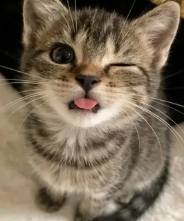

Котики очень милые, сейчас мы узнаем о них больше

Котики очень милые, сейчас мы узнаем о них больше
| Порода | Размер | Тип шерсти | Характер | Особенности ухода |
| Британская короткошёрстная | Средний / крупный | Короткая, плюшевая | Спокойный, независимый | Вычёсывание 1 раз в неделю |
| Шотландская вислоухая | Средний | Короткая или длинная | Ласковый, уравновешенный | Контроль состояния ушей и суставов |
| Мейн-кун | Крупный (гигантский) | Полудлинношёрстная | Дружелюбный, «собачий» нрав | Регулярное вычёсывание, много пространства |
| Сибирская | Крупный | Полудлинношёрстная | Игривый, преданный | Вычёсывание 2 раза в неделю |
| Бенгальская | Средний / крупный | Короткая, гладкая | Очень активный, любопытный | Нуждается в активных играх и когтеточках |
| Абиссинская | Малый / средний | Короткая | Энергичный, общительный | Минимальный уход за шерстью |
| Сиамская | Средний | Короткая | Разговорчивый, привязан к хозяину | Требует много внимания и общения |
| Рэгдолл | Крупный | Полудлинношёрстная | Очень мягкий, ручной | Регулярное расчёсывание мягкой пуходеркой |
| Персидская | Средний / крупный | Длинношёрстная | Тихий, флегматичный | Ежедневное вычёсывание и уход за глазами |
| Канадский сфинкс | Средний | Бесшёрстная | Ласковый, тактильный, озорной | Регулярное купание и защита от холода |